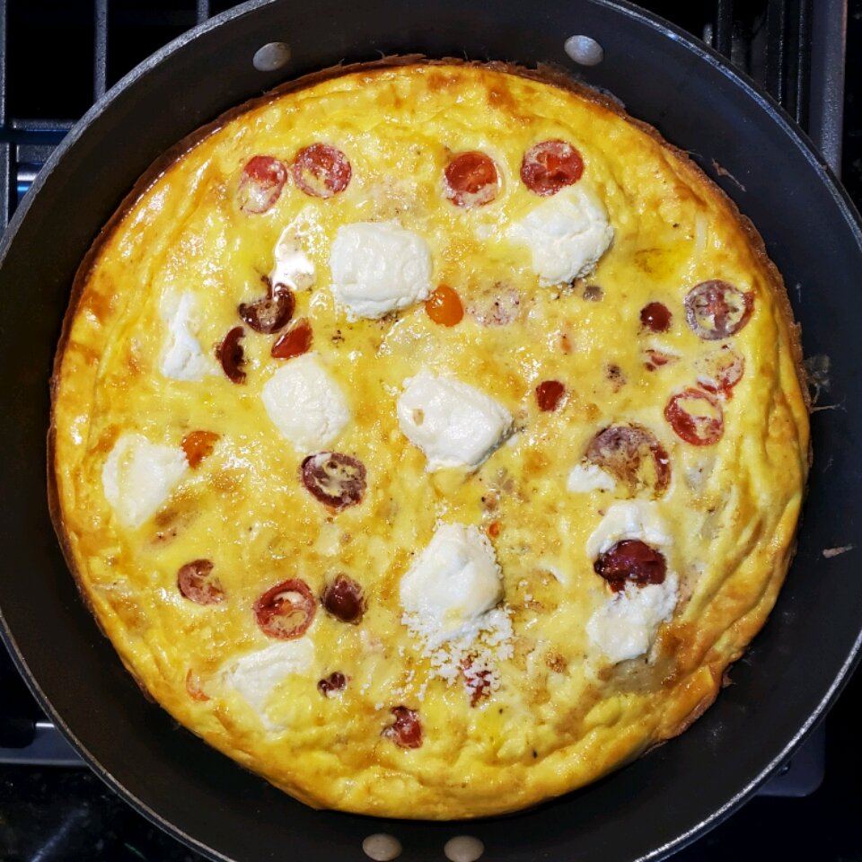

Smoked Salmon Frittata
Taste the Ocean for Brunch
If you're a salmon lover like us you'll enjoy this fresh and decadent smoked salmon frittata. Perfect for your next brunch gathering. Impress your friends by serving them a taste of the ocean
This simple brunch recipe is great for those in a hurry. Simply prepare the ingredients and pop into the oven. Et voila! 20 minutes later you've got an amazing brunch dish to serve.
Ingredients:
- 4 tbsp Olive Oil
- 1/4 Medium Onion - Chopped
- 4 oz Smoked Salmon
- 8 Black Olives
- 6 Eggs
- 2 tbsp Heavy Cream
- 2 tbsp Milk
- 8 oz Cream Cheese
- Pinch of Salt
- Pinch of Pepper
Instructions:
- Preheat the oven to 350 degrees F (175 degrees C).
- Heat olive oil in an 8 inch oven-safe skillet over medium heat. Add onion, and season with a little salt and pepper. Cook, stirring until translucent. Add the salmon and olives; cook and stir briefly to release the flavors.
- In a medium bowl, whisk together the eggs, milk and cream. Pour over the salmon and onion, and stir gently. Scatter cubes of cream cheese over the top. Cook over medium heat without stirring, until the edges appear firm.
- Place the skillet in the preheated oven, and bake for 20 minutes, or until nicely browned and puffed. Flip onto a serving plate, and cut into wedges to serve.